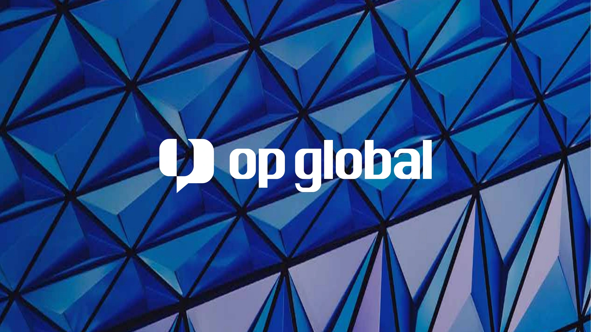
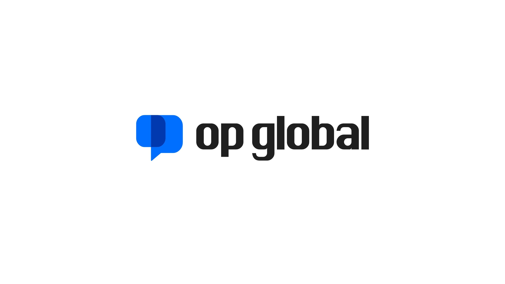
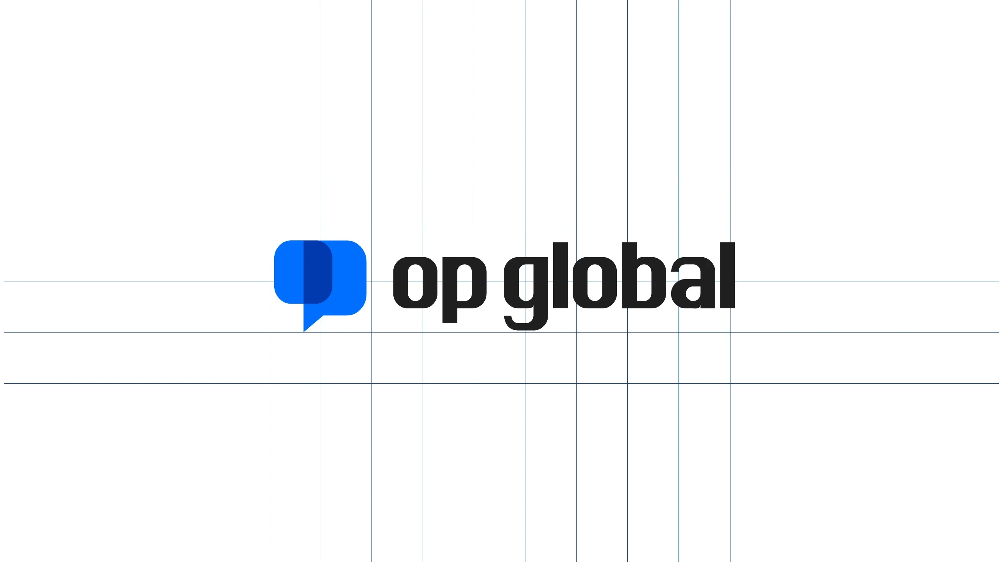
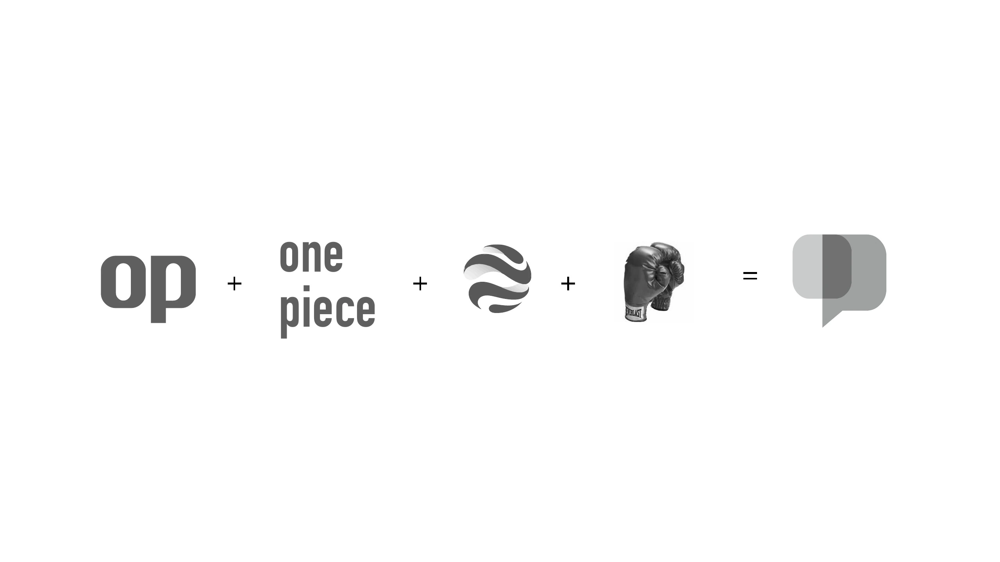
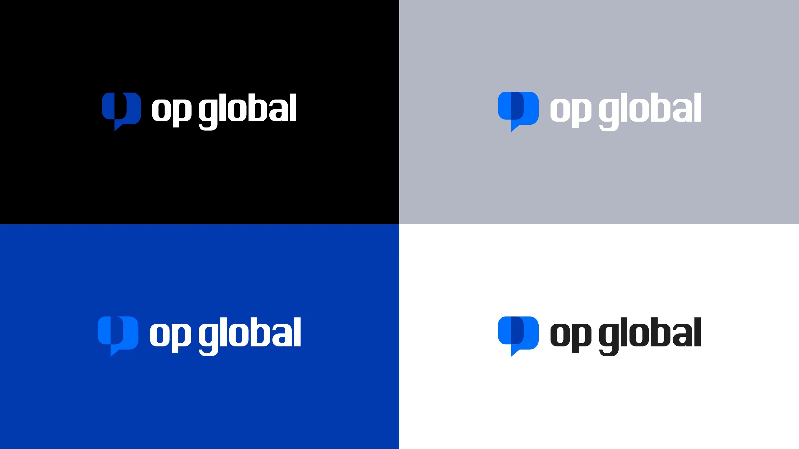
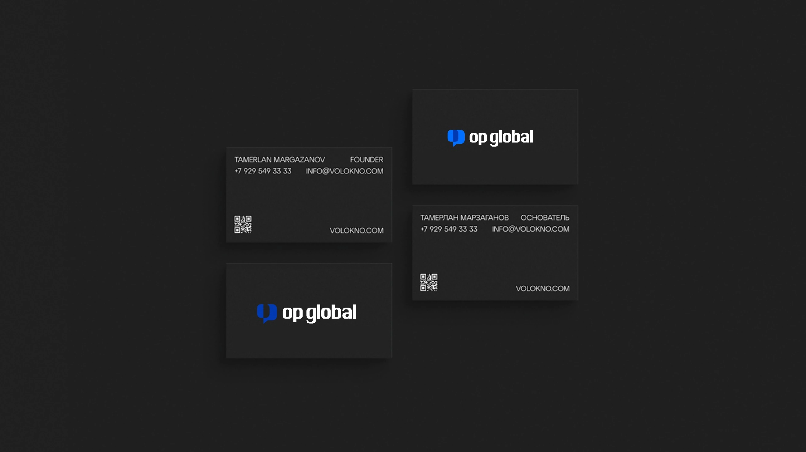
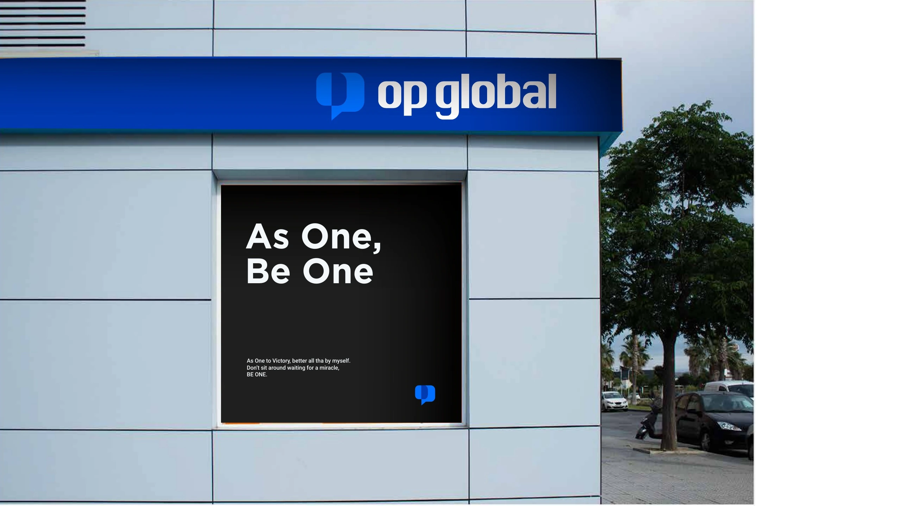
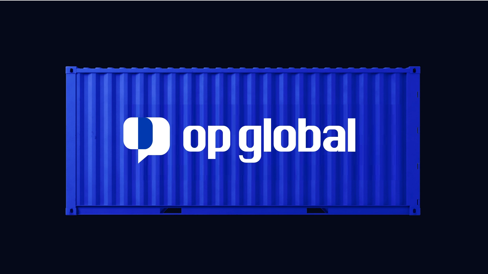
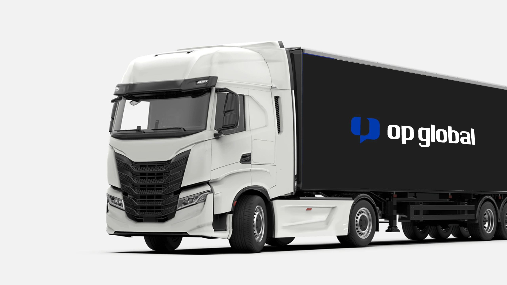
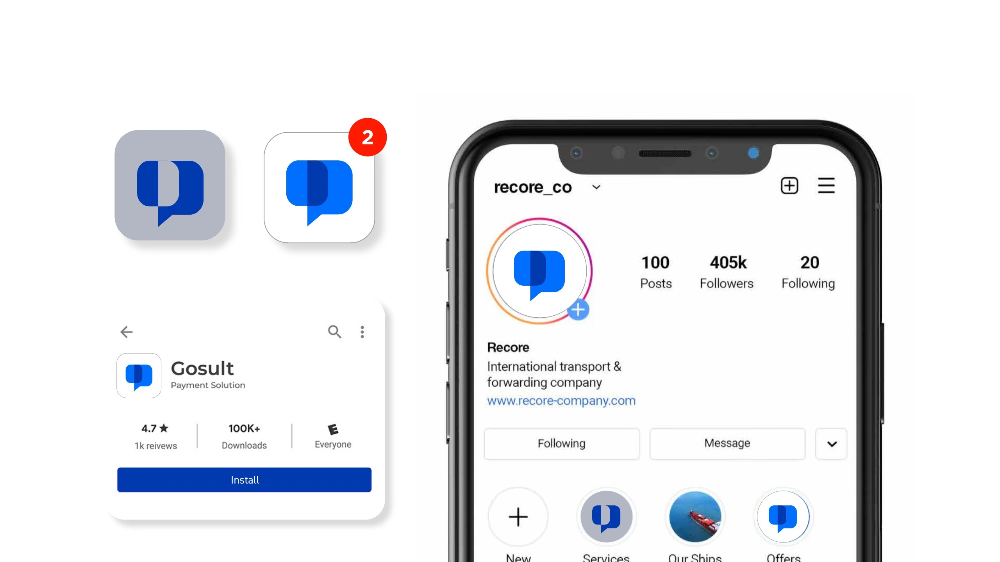

BRANDING · VISUAL IDENTITY
OP GLOBAL
OP 的最初灵感来自《海贼王》One Piece。我从航行、连接与力量出发，探索两套标志方向，并将选定方案延展到品牌应用。
- SCOPE
- BRAND IDENTITY · APPLICATION
- ROLE
- 品牌策略、标志设计与视觉系统。
- OUTPUT
- 23 页品牌提案。

方向 1
从航行与连接的意象开始。
方向 2
一击即中，直接而有力量。
第二套以拳头为意象。One Piece 是灵感起点，One Punch 是创意延伸，两者的首字母都是 OP，将冒险的联想与力量感联系起来。选定这一方案后，再展开标志规则与应用。




02 · BRAND APPLICATIONS
应用展示。
名片、建筑标牌、集装箱、运输车辆与社交媒体。




